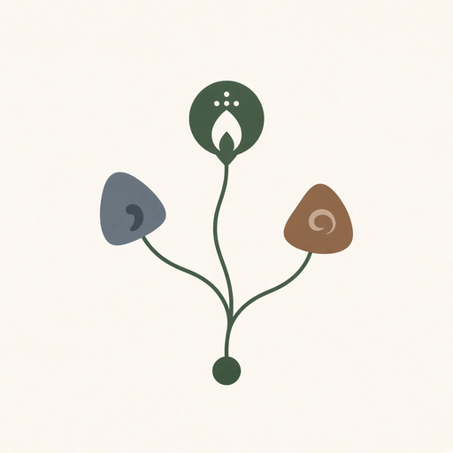
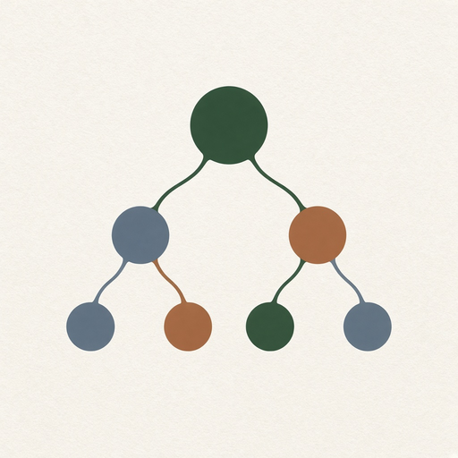

Phyllux apps hub
11. Memes and cultural evolution
9 modules in this Suite family. Soft launch lists the map; depth grows as Suite modules ship.

112. Meme Evolution TrackerHow an idea changes as people repeat it.
113. Meme GenealogyAncestry of an idea.114. Idea Mutation SimulatorSimulate possible mutations of an idea.
115. Cultural Meme ObservatoryIdeas spreading through communities.
116. Meme Relationship GraphRelationships among ideas.
117. Idea Lifecycle AnalyticsEmergence, adoption, mutation, decline, recurrence.
118. Meme LabExperimental study of cultural evolution.
119. Concept Mutation AIAI variations of a concept with comparison.
120. Intellectual Evolution DashboardHow a field's dominant concepts change.